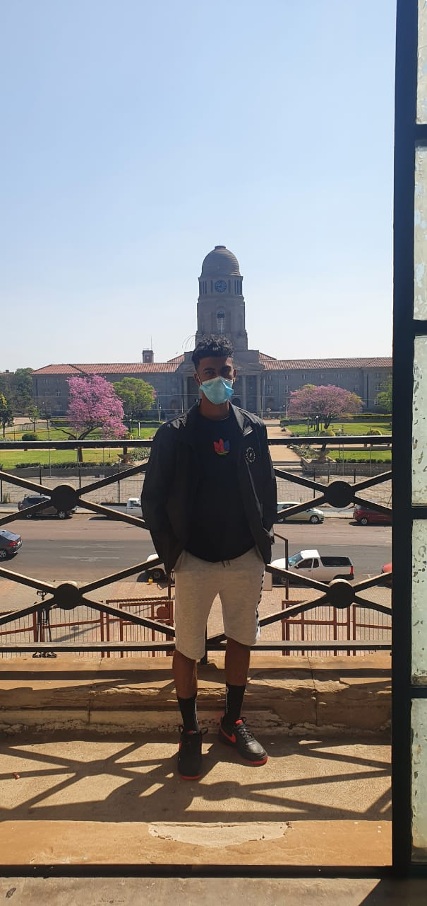

My name is Ricky Williams, I am a 20 year old full time college student at the IIE Rosebank college. I began my studies at this institution in 2020 after matriculating in 2019 from LSS. I am now currently in my second year of studies. In my spar time, i play soccer and read content on my field of studies to better my skills as a software developer. You can find me on Linkedin or send me an email @20111583@rcconnect.co.za. 
Why is it important?
• Because increasing awareness can lead to better understanding - Years ago people may have gossiped or stared at children with autism as they did not understand it. Today people are realizing that while autism may not be in their homes, it is their community. increasing awareness will increase peoples understanding of people with autism.
• When peoples understanding increases this can evoke greater empathy as well as support - Children with Autism may look very different for every individual, often, what may look like "throwing a fit" or "acting up" is a way a child with autism deals with a sensory overload. This is where empathy is very important, as children with autism often become easy targets for school bullies. Increasing awareness is not just about improving empathy, but also educating people on the basics of autism, which will increase the love and support for people with Autism.
• The increase of empathy can lead to an increase in acceptance - Improving awareness and empathy is about creating greater acceptance of people with autism.